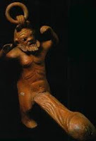

¿Sabías…? (Sexualidad y religión)
En el tercer milenio antes de Cristo, en Babilonia todas las mujeres tenían la obligación, al menos una vez en su vida, de acudir al santuario de Militta (la Afrodita griega) para practicar sexo con un extranjero como muestra de hospitalidad, a cambio de un pago simbólico. Este rito tiene su origen en la diosa de la cultura sumeria Innana, diosa de la belleza y la sensualidad. Sus sacerdotisas, que se habían consagrado vírgenes al servicio del templo, fornicaban con aquellos que habían dejado en el templo una ofrenda económica a la diosa. En la Biblia hay numerosas referencias contra estos actos.
Un manual taoísta del siglo II d. C. afirmaba que el emperador podía hacerse inmortal después de mantener relaciones sexuales con más de 1.200 mujeres.
-
La divinidad babilónica Innana/Ishtar era la protectora de las prostitutas y de los amoríos extramaritales, que por cierto no tenían connotación especial en Babilonia, ya que el matrimonio era un contrato solemne que perpetuaba la familia como sostén del estado y como generadora de riquezas, pero en el que no se hablaba de amor o de fidelidad amorosa. Así, a los hombres se les permitía ofrecer a sus esposas como pago colateral por un préstamo.

Las mejores muestras de arte erótico se pueden contemplar en diversos templos hindués. Realizados en el norte (entre los siglos IX y XIII) y en el sur de India (entre los siglos VI y XVII); presentan todas las formas imaginables de posiciones sexuales y coitales con personas y animales.
El término loba como equivalencia de prostituta viene de los ritos producidos en febrero en honor al dios romano de los campos y los pastores, Fauno Luperco (Lupus: lobo). Eran llamadas lobas u originalmente lupas las que ejercían la prostitución sagrada con los sacerdotes de este dios, los luperci, en el Ara Máxima.
En el Antiguo Egipto, los faraones efectuaban masturbaciones rituales para eyacular en el Nilo, con lo que se creía que el dios Atum fertilizaba a través del rey-dios al famoso río.
En la Biblia se utiliza el término “conocer” como eufemismo de relación sexual.
Según el Génesis (primer libro de la Biblia) el sobrino del patriarca Abraham ofreció a sus propias hijas para que fueran violadas por una turba violenta, a cambio de que no le hicieran daño a sus invitados varones, que eran ángeles.
La Biblia narra que las hijas de Lot, que Dios decidió salvar de la destrucción de Sodoma y Gomorra, tuvieron relaciones sexuales con su padre tras embriagarlo (Génesis 19).
La Biblia narra una historia de violación, amor y venganza? La hija del Patriarca Jacob, Dina, fue violada por un príncipe llamado Siquem. Luego, Siquem se enamoró de ella, pero los hermanos de Dina le pidieron a Siquem que él y su pueblo se circuncidarán para dar a su hermana en matrimonio. Tres días después de la circuncisión, cuando estaban más adoloridos, los hermanos de Dina entraron a la ciudad y mataron a todos los hombres. Tras la masacre los hijos de Jacob preguntan ¿había él de tratar a nuestra hermana como una ramera.
-
Según el Levítico (tercero libro de la Biblia) la menstruación causa que la mujer sea impura por siete días, al igual que cualquiera que la toque. Además no puede asistir durante esa “impureza”.

El libro de Levítico califica de “abominación” la homosexualidad (Levítico 18:22) —texto que conocen los evangélicos— pero también califica de abominación comer o tocar los cuerpos muertos del cerdo, bagre, mariscos, conejo, tortuga, o de cualquier insecto (Levítico 11).
La Biblia ordena la pena de muerte para los homosexuales (Levítico 20:13), de igual manera como para el que trabaje en Sabbath (Éxodo 31: 14-16).
El libro de Levítico (tercero de la Biblia) ordena matar a la persona que realice prácticas zoofílicas, e injustamente también al animal.
El libro de Deuteronomio (quinto libro de la Biblia) prohíbe ingresar a la asamblea del señor a aquellos varones que tengan magullados los testículos o mutilado el pene.
La Biblia relata que David trajo al rey Saúl los prepucios cortados de 200 filisteos para que este le diera a su hija en matrimonio.
La Biblia narra que el rey David, de quien la Biblia dice que su corazón fue conforme al corazón de Dios, amó demasiado a Jonathan, hijo del rey Saúl, de manera que llegó a afirmar que “su amor le fue mas dulce que el amor de las mujeres”.
El rey Salomón, hijo de David, famoso por su sabiduría, es el Hugh Hefner de la Biblia: Según Primera de Reyes 11:3, tuvo 700 mujeres, princesas, y 300 concubinas.
Según la Biblia, el dios Jehová ordenó al profeta Óseas tomar por esposa a una prostituta.
Según la Biblia (Isaías 20:2) el dios Jehová le ordenó al profeta Isaías andar desnudo por tres años? ¿Qué habrán dicho sus contemporánesos? ¿Designio de dios o chifladura?
Como hieródulas se conocían a las sacerdotisas que tenían sexo con los feligreses de la diosa Afrodita en la antigua Grecia.
-
Afrodita, la diosa del amor en la antigua Grecia, era la diosa del erotismo más que del amor romántico.
 El dios griego Príapo, era el dios de la fertilidad y protector de los genitales masculinos, tenía por símbolo un falo de dimensiones exageradas. Se consideraba hijo de Afrodita y de Dioniso o de Adonis (según las distintas formas del mito original). De él viene el término médico “priapismo”.
San Agustín concluyó que el pecado se transmitía biológicamente de Adán a todos sus descendientes a través del acto sexual, con lo que igualó el deseo sexual con el pecado.
El concepto dualista y neoplatónico de San Agustín acerca de que lo físico es malo y lo espiritual es bueno, influyó en la forma como él definiría la doctrina católica. Según este dualismo adoptado por San Agustín se idealizó el celibato, y las relaciones sexuales al ser físicas se consideraron malas.
San Agustín de Hipona rezaba: “Señor, dame castidad y dominio de mí mismo, pero todavía no”?
Hubo dos santos que eran pareja gay. Se trata de San Sergio y San Baco, quienes fueron torturados por no renunciar a su fe cristiana en tiempos del emperador Maximiano.
Uno de los primeros papas, Sixto III (432-440), fue juzgado por otros eclesiásticos por seducir a una monja? Fue absuelto tras citar en su defensa unas palabras adjudicadas a Jesús: “Aquel de vosotros que esté sin pecado, que arroje la primera piedra” (Juan 8:7).
El Papa Gregorio Magno (540-604) fue quien elaboró la lista de los siete pecados capitales, dentro del que se incluyó la lujuria, y fue además el inventor de la doctrina del purgatorio?
Mahoma (570-632), fundador del Islam, tuvo entre 13 esposas. Una de ella, Aisha, la tomó con tan sólo nueve años de edad, cuando él tenía 54 años, y era hija de su amigo Abu Bakr?
El Sura 24 del Corán condena el adulterio a 100 azotes.
El Papa Sergio III (904-911) tuvo un hijo con su amante adolescente, Marozia, treinta años menor que él y que era prostituta.
El papa Juan XI era hijo de una prostituta y un papa. Su padre fue Sergio III y su madre, Marozia.
El papa Juan XII (955-964) fue acusado de acostarse con sus dos hermanas a los 16 años y murió a los veintisiete años, cuando el marido de una de sus amantes irrumpió en su dormitorio, le descubrió in fraganti y le destronó el cráneo con un martillo.
Un pederasta llegó a ser papa. Se trata de Benedicto IX (1032 - 1044). Abusaba de los niños en el Palacio de Letrán.
El papa Clemente II (1046 -1047) dispuso que las prostitutas de los estados pontificios debían dejar la mitad de su herencia a la Iglesia Católica.
Recién en 1123 el celibato fue adoptado por la Iglesia Católica.
El teólogo musulmán Jalaluddin Al-Suyuti (c. 1445–1505 AD), afirmó que en el paraíso los hombres musulmanes tendrán una erección eterna y cada vez que se acuesten con una hurí (mujer virgen) la encontrarán virgen.
Otro pederasta que fue papa fue Bonifacio VIII (1294 - 1303). Él afirmaba que mantener relaciones sexuales con niños no era más pecaminoso que frotar una mano contra otra. El escritor Dante Alighieri lo colocó en el octavo círculo del infierno en su obra “La Divina Comedia”.
El Concilio de Toledo de 1324 calificó a la mujer de “liviana, deshonesta y corrompida”.
El papa Clemente VI (1342 -1352) tuvo tantas amantes, que adquirió una grave gonorrea, fue llamado por el poeta Francesco Petrarca el “Dionisos eclesiástico”
El papa Sixto IV (1471 - 1484) recaudó un impuesto eclesiástico sobre las prostitutas y cobraba a los sacerdotes por tener amantes.
El papa Sixto IV, quien construyó la capilla sixtina, tuvo seis hijos ilegítimos, uno de ellos con su hermana.
El pontificado de Inocencio VIII (1484-1492) es recordado como la Edad de Oro de los Bastardos. Reconoció a ocho hijos ilegítimos y se sabe que tuvo muchos más, aunque entre amorío y amorío encontró tiempo para poner en marcha la Inquisición. En su lecho de muerte ordenó que una bonita ama de cría le diera leche fresca de su pecho.
Se dice del papa Alejandro VI (el que repartió América entre España y Portugal) que presidió más orgías que misas. En 1501 organizó “la justa de las putas” en la que se invitó a cincuenta bailarinas a desvestirse lentamente en torno a la mesa del papa. Alejandro y sus parientes arrojaban con regocijo castañas al suelo, y obligaban a las mujeres a postrarse a sus pies como si fueran cerdos; después ofrecieron premios en forma de finos ropajes y alhajas para el hombre que pudiera fornicar con el mayor número de mujeres. Otro de los pasatiempos de Alejandro era ver copular a los caballos, lo que le hacía “desternillarse de risa”. La novela “Los Borgia” de Mario Puzzo narra su desordenada y ambiciosa vida.
César Borgia, arzobispo de Valencia e hijo del papa Alejandro VI, vio arruinada su noche de bodas por un bromista que sustituyó su medicamento por un laxante.
El Papa Julio II (1503-1513) no permitió que los fieles le besaran los pies el viernes santo de 1508 porque tenía los pies cubiertos de úlceras de sífilis que adquirió con prostitutos en Roma?
El Papa Julio III (1550-1555) hizo cardenal a Innocenzo Ciocchi Del Monte, un joven de 17 años que tomó por amante, pero que hizopasar como “sobrino adoptivo”. El jovencito era mendigo, pero apuesto, y fue visto por primera vez por el Papa peleándose con un mono de un vendedor en las calles. Fue tanto el favoritismo del Papa por su “sobrino adoptivo” que lo hizo abad de varias abadías en Europa. Innocenzo llegó a tener unos de los ingresos más altos de Europa por aquella época.
La madre del marqués de Sade fue una monja católica.
El sacerdote jesuita Lazzaro Spallanzani, en la labor de naturalista fue quien descubrió en siglo 18 el papel de los espermatozoides en la reproducción. Lo hizo inyectando espermatozoides de un perro a una perra.
El segundo presidente de los mormones, Brigham Young, tuvo 55 esposas y 55 hijos.
Hay un beato católico que vivió con su pareja homosexual. Se trata del cardenal inglés John Henry Newman (1802-1809). Newman vivió durante 30 años con el sacerdote Ambrose Saint John, de quien llegó a decir que le “había amado con un amor tan fuerte como el de un hombre por una mujer”. Ambos fueron enterrados juntos, hasta que el vaticano, quien niega la homosexualidad de Newman, intentó cambiar los restos. Benedicto XVI anunció su beatificación en 2009.
-
En la época victoriana se consideraba inadecuado tener relaciones sexuales el domingo, el Día del Señor.

La profetisa adventista Elena G. de White, llegó a afirmar que la masturbación —llamada por ella “vicio secreto”— producía locura, ceguera, catarro, pérdida de apetito, y de “energía vital”
La profetisa adventista Elena G. de White, avaló las relaciones sexuales en viernes después de la puesta de sol (ya en el Sabbath), tras varias cartas de creyentes adventistas que le pedían consejo al respecto.
Las dulces voces de los niños cantores del Vaticano, hasta 1890, eran resultado de la castración de los chicos antes de la pubertad.
La biblioteca más completa sobre sexualidad se encuentra en el Vaticano.
John Rock, uno de los inventores de la píldora anticonceptiva, era católico e iba misa.
En 1956 la Iglesia Católica aprueba que las mujeres que tienen que regular el ciclo menstrual, pudieran tomar pastillas con hormonas, que eran anticonceptivas pero que no se vendían en ese entonces como tales. El Papa Pío XII autorizó usarlas con ese fin. El tema es que ya se sabía que tenía otros efectos: las que las tomaban se beneficiaban con ese efecto anticonceptivo que iba más allá de la abstinencia. En el contexto de renovación que impone el Concilio Vaticano II, el Vaticano convoca a una comisión conformada por teólogos, sacerdotes, laicos, que estudian durante cuatro años el tema. La mayoría de sus integrantes aprueba que se pueda usar pero el papa Pablo VI cuando redacta en 1968 la Encíclica Humanae Vitae, sobre la temática, asume la posición de la minoría más conservadora que se había opuesto.
En 1981 la Iglesia Adventista del Séptimo Día registró su nombre como una marca comercial, como reacción a la formación del grupo “Kinship Adventista del Séptimo Día”, que buscaba apoyar a los adventistas homosexuales y abogar por la aceptación de la homosexualidad en esta denominación.
-
En 1983 pastores de gran jerarquía de la Iglesia Advestista del Séptimo Día fueron arrestados por coqueteo o actividad homosexual en sitios públicos. Uno de ellos fue el presidente de la Universidad de Andrews, quien fue arrestado y penalizado al habérsele declarado a un hombre quien resultó ser un policía secreto. Poco después el pastor asociado de la “Conferencia General también fue arrestado, en el parque Takoma, con cargos de actividad homosexual ilegal (cruising). Ambos hombres renunciaron a sus puestos.
Gene Robinson fue el primer clérigo abiertamente gay que fue elegido como obispo en la Iglesia Episcopal (una rama de la Iglesia Anglicana) en 2003. Robinson se unió civilmente con su pareja en 2008.
La secta “Niños de Dios” o “La familia” tiene el historial de abuso sexual más grande de sus seguidores, no por cantidad sino por proporción. Su líder, el pastor David Barndt Berg, predicó hace 30 años un particular método de captación de miembros basado en el llamado flirty fishing . Se trata de la predicación del Evangelio usando el sexo entre adultos y menores con el fin de ganar conversos y obtener dinero forzando a las mujeres a la prostitución religiosa.
En 2010 la Policía italiana detuvo en Roma a Danilo Speranza, líder de la secta “la comunidad Maya” por abuso sexual de madres e hijas menores de edad.
Rachel Isaacs fue la primera rabina abiertamente lesbiana. Fue nombrada por el Seminario Teológico Judío de Nueva York en 2011.
Más ha dicho el Vaticano en contra del condón y el matrimonio gay que lo que se haya dicho en el pasado contra de la esclavitud o del nazismo y el fascismo.
Dos sacerdotes colombianos pagaron 7.500 dólares a un sicario para que los matara para que nos trascendiera su homosexualidad y el hecho de ser portadores de VIH en enero de 2012.
La Iglesia Católica admitió 4.000 casos de abuso sexual de sus sacerdotes en la primera década del siglo XXI. Esto se hizo en un simposio en Roma contra el abuso sexual en febrero de 2012.
No son pocos los casos de pastores que predicaban furiosamente contra la homosexualidad y que resultaron tener una doble vida. Uno de ellos es Ted Haggard, que llegó a ser consejero de George Bush, y presidente de la Asociación Nacional del Evangélicos en Estados Unidos, otro caso famoso es el del pastor Eddie Long, ministro de la Iglesia Bautista Misionera del Nuevo Nacimiento, y el de George Alan Rekers, fundador de la organización conservadora Family Research Council, opuesta al matrimonio homosexual.
La Iglesia Bautista de Westboro tiene como eje principal de su doctrina el denunciar la homosexualidad por medio de mitines y protestas frente a a funerales de personalidades gay y de soldados estadounidenses caídos en combate porque, según ellos, Dios castigará a EE.UU. por su respeto a la homosexualidad. Dentro de sus manifestaciones llevan carteles con el texto “Dios odia a los maricas”.
El suicidio es una vía de escape para muchos mormones homosexuales. De hecho la agrupación “Afirmación” ha documentado los casos y aboga por la aceptación de gays y lesbianas dentro de la Iglesia de Jesucristo de los Santos de los Últimos Días.
Volver a la sección Examinando las religiones
Comentarios
Comments powered by Disqus